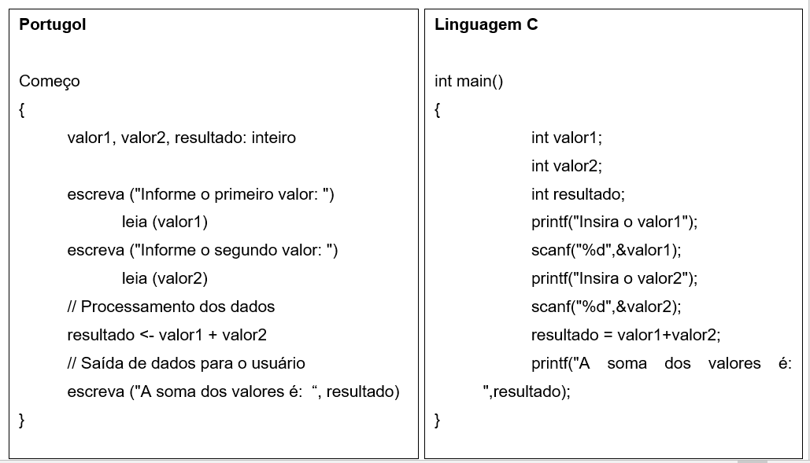
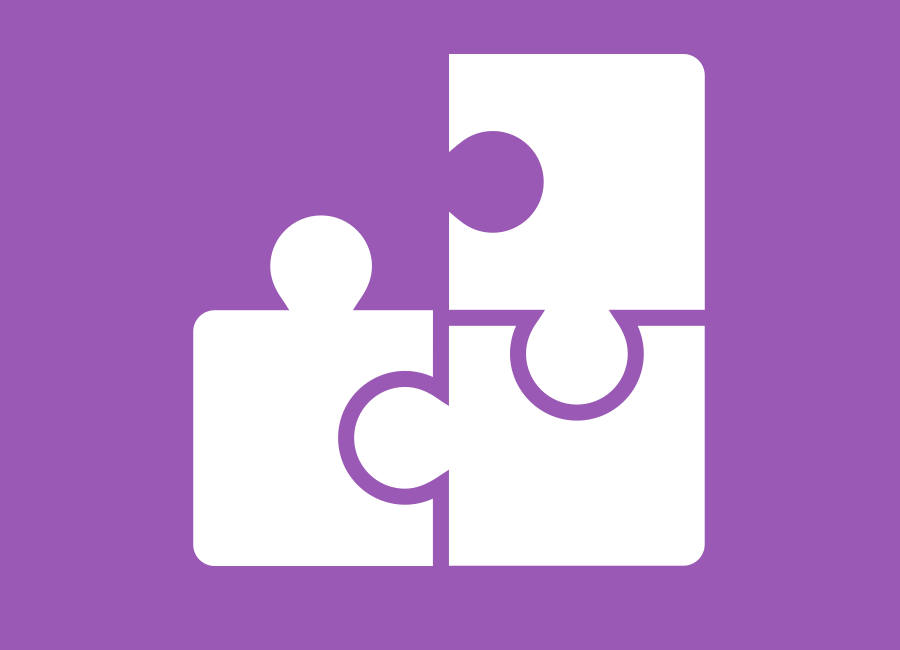
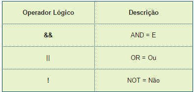
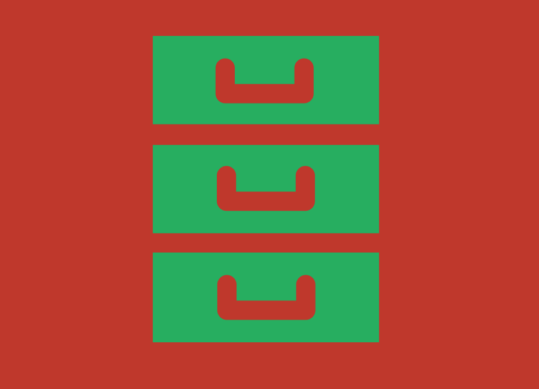
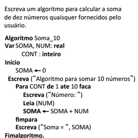
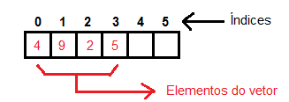
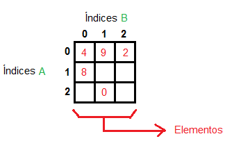
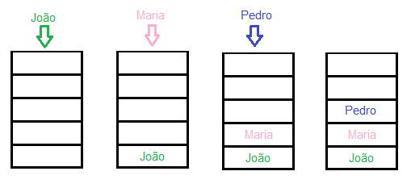
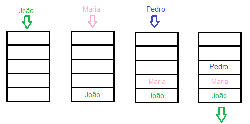
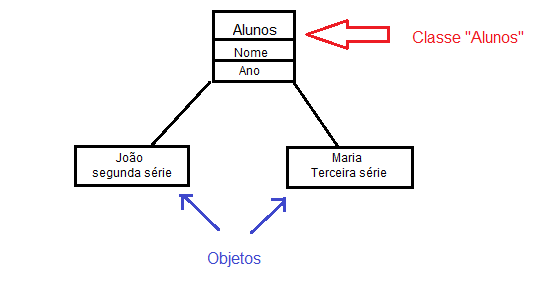

O minicurso, com duração de três dias e ministrado exclusivamente para mulheres, teve como objetivo principal introduzir lógica de programação às alunas. Foram ensinados conceitos como: o que é lógica; o que é algoritmo, linguagens de programação, estruturas de repetição e decisão, conceitos iniciais
(váriaveis, laços, estrutura de dados, etc.). A prática de algoritmos foi realizada através da ferramenta Scratch - modo lúdico de praticar algoritmo e estruturas da programação - e a aplicação dos conceitos foi feita através da linguagem Javascript, com exemplos usados no back-end (código) de um simples website.
É a organização coerente e estruturada do pensamento, é o raciocínio ordenado; a capacidade de relacionar as ideias de forma consciente e encadeada do que se desejar expor, expressar com palavras ou não; a capacidade racional e clara de expressar as ideias ou algo de forma que se compreenda sem dar vazão à ambiguidade. Raciocínio lógico; a harmonia entre o pensamento e a ação.
Utilizamos a construção lógica em nosso dia-a-dia para fazer inferências lógicas (conclusões), por exemplo:
a) Sei que o chapéu está no armário. Sei que o armário está fechado. Logo, concluo que tenho de abrir o armário para pegar o chapéu.
b) Sei que sou mais velha que Mariana.
Sei que Mariana é mais velha que Joana.
Então, concluo que eu sou mais velha que Joana.
Atividade: Considere os fatos abaixo:
• Camila quer fazer intercâmbio;
• Para ser aprovada, ela precisa de uma nota superior a 600 no ENEM;
• Camila obteve 750 no ENEM. Então, que podemos concluir?
Lógica Computacional
É o modo como você encadeia as ideias para atingir determinado objetivo. Por exemplo, fazer com que um programa calcule a média de 3 números.
Algoritmo
É uma sequência finita de passos (instruções) que levam à execução de uma tarefa. Ou seja, uma sequência lógica que deve ser seguida a fim de atingir um objetivo. Além disso, as instruções seguidas devem ser claras e objetivas, evitando redundâncias (repetição de ideias) e possíveis erros. Por exemplo:
Objetivo: Trocar uma lâmpada
Sequência:
1. Pegue uma escada;
2. Posicione a escada embaixo da lâmpada;
3. Pegue uma lâmpada nova;
4. Suba na escada;
5. Retire a lâmpada velha;
6. Coloque a lâmpada nova.
Outros exemplos de algoritmos: somar dois números, fazer bolo, média aritmética de 4 números, etc.
Para trocar a lâmpada, a sequência apresentada não é a única que resolve este problema, pode haver outras sequências que atinjam esse mesmo objetivo. Por exemplo:
1. Pegue uma lâmpada nova;
2. Pegue uma escada;
3. Posicione a escada embaixo da lâmpada;
4. Suba na escada;
5. Retire a lâmpada velha;
6. Coloque a lâmpada nova.
Computacionalmente, há centenas de soluções para um problema, podendo elas ser diferenciadas pelo encadeamento de instruções (lógica) e eficiência - algumas consomem maior desempenho computacional do que outras.
Atividade: Descreva um algoritmo para fazer macarrão.
Algoritmo com estrutura de decisão
Até agora, apresentamos a você algoritmos em que se deve seguir todos os passos por inteiro para que o objetivo seja alcançado. Entretanto, existem sequências lógicas em que a execução das instruções depende de decisões a serem tomadas. Por exemplo, ao trocar a lâmpada, não perguntamos se ela estava queimada, ou seja, não realizamos nenhum teste. Para resolver essa questão, podemos acrescentar um teste para verificar se a lâmpada está queimada.
1. Ligue o interruptor
2. Se a lâmpada não acender:
2.1. Pegue uma escada;
2.2. Posicione a escada embaixo da lâmpada;
2.3. Pegue uma lâmpada nova;
2.4. Suba na escada;
2.5. Retire a lâmpada velha;
2.6. Coloque a lâmpada nova.
Algoritmo com estrutura de repetição
Apesar do nosso último algoritmo verificar a necessidade de trocar a lâmpada, não verificamos se a nova lâmpada funciona. Então, alteraremos nosso algoritmo a fim de garantir que ao final da execução tenhamos uma delas funcionando.
1. Ligue o interruptor
2. Se a lâmpada não acender:
2.1. Pegue uma escada;
2.2. Posicione a escada embaixo da lâmpada;
2.3. Pegue uma lâmpada nova;
2.4. Suba na escada;
2.5. Retire a lâmpada velha;
2.6. Coloque a lâmpada nova;
2.7. Se a lâmpada não acender:
2.7.1. Retire a lâmpada;
2.7.2. Coloque uma outra lâmpada;
2.7.3. Se a lâmpada ainda não acender:
2.7.3.1. Retire a lâmpada;
2.7.3.2. Coloque uma outra lâmpada;
(Até quando ficaremos nesses testes???)
Pelo algoritmo acima, caso a nova lâmpada não acenda, devemos trocá-la novamente e repetir esse procedimento indefinidamente até que uma lâmpada funcione. Note que não sabemos quantas vezes teremos de repetir o teste até acharmos uma lâmpada que funcione.
Para resolver o problema anterior, usamos as estruturas de repetição. Elas definem ações que devem ser repetidas enquanto uma situação acontece. Com essa nova estrutura, nosso novo algoritmo é:
1. Ligue o interruptor;
2. Se a lâmpada não acender:
2.1. Pegue uma escada;
2.2. Posicione a escada embaixo da lâmpada;
2.3. Pegue uma lâmpada nova;
2.4. Suba na escada;
2.5. Retire a lâmpada velha;
2.6. Coloque a lâmpada nova.
2.7. Enquanto a lâmpada não acender:
2.7.1. Retire a lâmpada;
2.7.2. Coloque uma outra lâmpada.
Com as modificações, os itens 2.7.1 e 2.7.2 serão executados enquanto a condição do item 2.7 for satisfeita, ou seja, enquanto eu continuar trocando a lâmpada e ela não acender.
Programação
Programas
Os programas são os algoritmos escritos numa linguagem de computador (linguagem de programação) e que são interpretados e executados por uma máquina - no nosso caso, um computador. Já a programação, consiste no ato de escrever esses programas. Alguns exemplos de programas são: Word, Excel, jogos de computador e videogame, reprodutores de mídia (música e filme), aplicativos de celular, etc.
Linguagem de Programação
O algoritmo é a maneira na qual você "dirá" ao computador o que fazer. Entretanto, a forma como escrevemos os algoritmo anteriores é legível somente ao ser humano, pois o computador não "fala" essa língua. Para que você "conte" ao computador o que fazer, ou seja, para que você apresente seu algoritmo a ele, é necessário escrever numa linguagem em que ele e você entendam, a linguagem de programação. Como ela funciona?
A "língua" que o computador entende, na verdade, são 1 e 0 - números binários. A linguagem de programação é escrita e, através de alguns softwares (compiladores), elas são "traduzidas" para a linguagem binária.
Existem diversas linguagens de programação, como: C, C++, Pascal, Fortran, JavaScript, Java, C#, PHP, Delphy, Python, entre outras. Cada uma possui: seu grau de dificuldade para aprendizado, conjunto de símbolos, sintaxe (conjunto de expressões), conjunto de comandos e características. A escolha de uma delas para determinada situação pode depender de: conhecimento do profissional, aplicabilidade em relação ao problema a ser revolvido, desempenho do computador, entre outros. A seguir, alguns exemplos de algoritmo na linguagem fictícia "Portugol" e na linguagem real "C":

Nos exemplos anteriores, o algoritmo solicita ao usuário a entrada de dois números, e em seguida ele soma os dois números digitados e apresenta o resultado na tela do usuário. A linguagem Portugol não é uma linguagem de programação, mas uma pseudolinguagem usada, principalmente para aprendizagem e ensino de programação, e não em um ambiente de programação - conjunto de tecnologias que dá suporte à programação de computadores.
Construindo algoritmos
Pseudocódigo e Código
Quando você constrói seu algoritmo, antes de passá-lo para linguagem de programação, é comum utilizar pseudolinguagens - como o Portugol, ver exemplo anterior- para descrever e/ou planejar como será o programa. Ao programar, você utilizará uma linguagem de programação, então estará escrevendo o "código" do seu programa. Um exemplo de código foi dado anteriormente na linguagem C.
Entradas e Saídas
Ao construir um algoritmo, você deve estar ciente de que ele possui algumas partes, mesmo sendo um pouco difícil de observá-las. Essas partes são: entrada, processamento e saída. Para ilustrar isso, pensemos numa receita de um bolo de chocolate. Para fazer o bolo você precisa de ingredientes (farinha, ovos, açúcar, fermento, etc.) que, no caso, são as entradas. Logo após, os ingredientes passam por algumas ações (bater na batedeira, mexer, misturar, assar, entre outros) que são o processamento. E por fim, teremos nosso bolo pronto que é uma saída.
Para um programa, identificar essas partes é de extrema importância, pois auxilia na seleção de tarefas a serem executadas e o modo como serão executadas, evitando possíveis erros de lógica depois que o código já está pronto.
Teste de Mesa
Antes de codificar um algoritmo, é importante ter o planejamento do mesmo. Assim que se desenvolve um algoritmo, é interessante testá-lo para evitar erros ao codificá-lo (passá-lo para linguagem de programação) e muitas manutenções depois disso. Esse teste, apenas do encadeamento das ideias, chama-se teste de mesa.
Estrutura de linguagem

Estruturas de Linguagem
Expressões lógicas são formas de comparação provenientes da matemática e da lógica. São utilizadas na computação para testes condicionais (como em testes de se/então, controle de loops, etc), como visto no tópico Algoritmo com Estrutura de Decisão.
Mas como representá-las numa linguagem formal? Para isso, são utilizadas estruturas de linguagem (operadores lógicos e relacionas).
Os operadores relacionas comparam dois valores e retornam um valor booleano (verdadeiro ou falso).
Os operadores lógicos também retornam valores booleanos (verdadeiro ou falso), mas são usados somente em expressões lógicas.

Por exemplo:
3 > 4 - falso
5 == 5 – verdadeiro
(4+3) > = 7 – verdadeiro
(4 == 4) && (5 > 7) – falso, pois 5 não é maior que 7. Lembrando, que estou comparando expressões lógicas – eu não poderia fazer 4 && 4, pois aqui não estaria comparando expressões.
Algumas observações devem ser feitas sobre cada operador lógico:
&&: só retorna verdadeiro, se todas as expressões forem verdadeiras;
|| : basta que uma expressão seja verdadeira para que a operação seja verdadeira por completo;
! : inverte o valor lógico de uma expressão
Por exemplo:
((4+5) >= 9) && (7 == 7) – verdadeiro, pois 9 >= 9 e 7 = 7
(4+5) <= 9) || 7 != 7 - verdadeiro, pois 9 <= 9, apesar de 7 != 7 ser falso. Para o operador “ || “, basta que uma expressão seja verdadeira para que o valor retornado seja verdadeiro.
Vale ressaltar que alguns operadores mudam de linguagem para linguagem. Por exemplo, a linguagem C utiliza ” == “ para comparar se uma coisa é igual a outra, mas há linguagens que utilizam “ === “ para fazer isso.
Variáveis

Todo programa, ao ser executado, ocupa uma certa quantidade de memória no computador. O espaço reservado na memória vai conter os dados e as instruções do programa.
Para que você possa "guardar" uma informação em um programa (por exemplo: um nome, um número, o resultado de uma operação, etc.), é preciso solicitar para o computador reservar um espaço na memória. Para fazer isso, nós declaramos uma variável.
Exemplo: var nome_variável: tipo_variável
O texto acima é uma declaração de variável. A palavra "var" apenas indica que nas próximas linhas virão variáveis. Depois disso, são indicados um nome e o tipo da variável (se é um número, uma letra, uma palavra, etc.).
Em uma abordagem prática, suponha que você tenha um pote, que será sua variável. Ao colocar algo dentro do pote, você precisa informar duas coisas:
• Tipo: o que está sendo armazenado? Uma comida, um brinquedo, ou o que quiser;
• Nome: para localizar sua variável facilmente. Se for comida, coloque o nome dela, por exemplo: "Carne".
É importante ressaltar também que no nome não se deve utilizar caracteres especiais (como +, *, #, @, etc.) e nem deixar espaço ou hífens entre palavras, pois alguns caracteres possuem funções pré-definidas no programa, como operações matemáticas (+, -, *, /), e o espaço irá quebrar a palavra, fazendo com que erros ocorram.
Laços
Como visto na seção de variáveis, existem dados e instruções para armazenar na memória do computador. Podemos associar um programa como uma receita de bolo: os dados são os ingredientes, e as instruções seriam o "modo de preparo".
Um loop ou laço é uma instrução de repetição, ou seja, quando você precisar fazer uma coisa várias vezes. Existem dois tipos de laços:
• "para... faça": é utilizado quando se quer repetir algo determinadas vezes. Você deve saber a quantidade para utilizá-la.
Regra: para <variável de controle> de <valor inicial> até <valor final> passo <incremento> faça:
<instruções>
fim do "para"
Acima, o <valor inicial> e <valor final> determinam o intervalo das repetições que você deseja fazer. A <variável de controle> é apenas uma variável para armazenar esses valores inicial e final, o <incremento> é "de quanto em quanto" se deseja "andar" no intervalo e as <instruções> são os comandos a serem repetidos. Para um entendimento mais fácil, imagine que você está em uma feira e precisa comprar meia dúzia de laranjas. Seu código seria o seguinte:
para <Laranjas> de <1> até <6> passo <De uma em uma> faça:
<Escolher uma laranja>
fim do "para"
Outro exemplo:

• "enquanto... faça": É utilizado quando não se sabe a quantidade de repetições.
Regra: Enquanto <condição de repetição> faça: <instruções> fim do "enquanto"
Nesse laço, a <condição de repetição> é o motivo para que a repetição das <instruções> pare.
Suponha que você esteja no mercado, indo pagar suas mercadorias. Esse laço pode ser aplicado para o operador do caixa, que passa os produtos até eles acabarem para que possa finalizar a compra. O código ficaria da seguinte forma:
Enquanto <não acabarem os produtos dos clientes> faça: <passar os produtos na leitora> fim do "enquanto"
Condição
As instruções de um programa podem obedecer uma condição que você estabelecer. Exemplo:
Regra Se<expressão lógica> então <instrução 1> senão <instrução 2> fim do "se"
A <instrução 1> acontece somente se a <expressão lógica> for satisfeita, caso contrário, ocorre a <instrução 2>.
Suponha que você está saindo de casa e está chovendo. Você leva seu guarda-chuva para se proteger, podendo ser uma condição, conforme abaixo:
Se <Estiveer chovendo> então <Levar guarda-chuva> senão <Deixar o guarda-chuva em casa> fim do "se"
Função
Como o próprio nome diz, a função tem uma determinada tarefa a ser cumprida. Mas ela só acontece quando você a chama.
Exemplo:
Função <nome>(<valores de entrada>) <instruções> fim da função (<valor resultante>)
Você primeiro atribui um <nome> para a função. Dentro do parênteses, na frente do nome, ficam o(s) valor(es) de entrada para que possam ser executadas as <instruções>. No final da função, ela "devolve" um <valor resultante>.
Podemos fazer uma soma de dois números, X e Y. Para isso, basta ter uma variável Z como resultado da soma e fazer:
Função Somar_2_numeros(X,Y) Z = X + Y fim da função (Z)
Estrutura de Dados
A estrutura de dados é um meio de organizar os dados do programa para que haja uma certa eficiência na hora de utilizá-los. Existem vários tipos, como:
• Vetores: um vetor é como se fosse uma variável, porém contendo índice, o que permite armazenar mais de um elemento. É necessário informar o tamanho do vetor (quantidade que ele pode armazenar) na hora de declará-lo. Exemplo: Dado um Vetor[] com 6 elementos:

vetor é representado como: Nome_Vetor[<índice>]. Assim, o vetor da imagem acima possui:
Vetor[0] = 4 -> O vetor com índice zero possui o elemento 4 armazenado;
Vetor[1] = 9 -> O vetor com índice 1 possui o elemento 9 armazenado;
Vetor[2] = 2 -> O vetor com índice 2 possui o elemento 2 armazenado;
Vetor[3] = 5 -> O vetor com índice 3 possui o elemento 5 armazenado;
Vetor[4] e Vetor[5] não possuem elementos.
• Matrizes: são um conjunto de vetores, onde dois índices (das linhas e das colunas) indicam o local do elemento.
Exemplo: Dada uma matriz com 9 elementos (matriz 3x3):

A localização de um elemento acontece ao juntar o índice das linhas (índices A) com os índices das colunas (índices B). Na imagem acima, temos:
Matriz[0][0] = 4 -> o elemento da matriz da linha 0 e coluna 0 é 4;
Matriz[0][1] = 9 -> o elemento da matriz da linha 0 e coluna 1 é 4;
Matriz[0][2] = 2 -> o elemento da matriz da linha 0 e coluna 2 é 2;
Matriz[1][0] = 8 -> o elemento da matriz da linha 1 e coluna 0 é 8;
Matriz[1][1], Matriz[1][2], Matriz[2][0] não possuem elementos;
Matriz[2][1] = 0 -> o elemento da matriz da linha 2 e coluna 1 é 8;
Matriz[2][2] não possui elementos.
• Pilhas: as pilhas possuem uma regra de "empilhamento", os primeiros elementos a entrarem serão os últimos a saírem, assim como as batatas que vêm dentro de uma lata, não é possível pegar a última batata sem retirar as outras antes, mas a última que sair foi a primeira a ter entrado.
Exemplo:

Primeiro foi inserido o João na pilha, depois Maria e por fim Pedro. Para que João possa sair da pilha, é preciso que o Pedro saia antes, depois Maria. O primeiro a entrar é o último a sair.
• Filas: As filas são praticamente o oposto das pilhas. O primeiro que entra é o primeiro que sai. Exemplo:

Nesse caso, João pode sair já que foi o primeiro a entrar, enquanto Pedro terá que esperar o João e a Maria saírem.
• Listas: são conjuntos de vários elementos. Nas listas é possível acessar um elemento, fazer alterações, remover e inserir elementos, ordená-los, quebrar a lista em duas ou mais, além de copiar a lista para outro espaço. De acordo com o que se deseja fazer, uma lista pode ser uma fila ou pilha.
Classe e Objeto
Uma classe é como se fosse uma definição geral de alguma coisa, enquanto nela, existem alguns objetos. Por exemplo: "Alunos" é uma classe, enquanto "João da segunda série" e "Maria da terceira série" são objetos dessa classe.

Links
Links interessantes
• Apostila de lógica de programação
http://www.ouropreto.ifmg.edu.br/lp/apostilas/apostila-logica-de-programacao
http://www.devmedia.com.br/apostilas-logica-de-programacao/765In
http://online.k19.com.br/libraries
https://www.caelum.com.br/apostila-html-css-javascript/
http://www.netsoft.inf.br/aulas/5_SIN_Programacao_Web/Apostila_javaScript.pdf
• Cursos online de linguagens de programação
http://blog.ted.com/10-places-where-anyone-can-learn-to-code/
http://www.w3schools.com/js/
https://www.codeschool.com/
https://www.codecademy.com/pt
https://www.udemy.com/
https://code.org/learn
https://www.khanacademy.org/
• Ferramentas para treinar lógica de programação
https://scratch.mit.edu/
https://code.org/learn
http://www.thefoos.com/hour-of-code/
http://monstercoding.com/#hour_of_code
• Tira dúvidas e fóruns
http://pt.stackoverflow.com/
http://www.devmedia.com.br/
http://www.w3schools.com/js/
• Notícias sobre tecnologia
https://tecnoblog.net/
• Tutorial com Hello World de JavaScript e algumas referências
https://www.caelum.com.br/apostila-html-css-javascript/
http://tableless.github.io/iniciantes/manual/js/
https://www.javascript.com/resources

 Os operadores lógicos também retornam valores booleanos (verdadeiro ou falso), mas são usados somente em expressões lógicas.
Os operadores lógicos também retornam valores booleanos (verdadeiro ou falso), mas são usados somente em expressões lógicas.